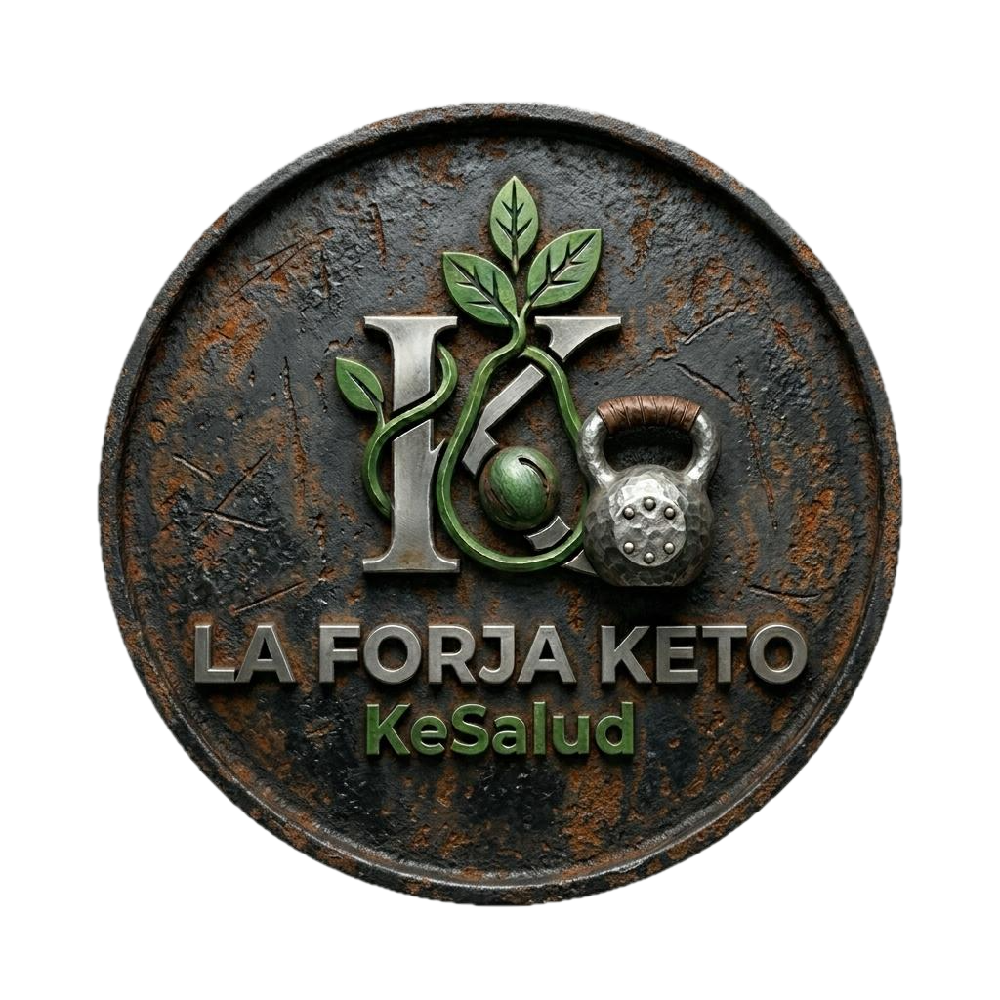

Come mejor, muévete mejor, vive mejor.
En KeSalud unimos la alimentación keto, la salud basada en evidencia y el entrenamiento con kettlebell — el método que entreno cada semana — en un solo sitio.

Te ayudamos a mejorar tus hábitos
Seis áreas, un mismo objetivo: que comas, entrenes y descanses mejor de forma sostenible.
Kettlebell: la herramienta con la que entreno cada semana
Una sola pesa rusa sustituye media sala de máquinas: fuerza, potencia, movilidad de cadera y cardio en sesiones de 20-30 minutos.
Últimos artículos
Estamos preparando los primeros artículos sobre keto, salud y kettlebell. Vuelve pronto.
Lleva KeSalud a tu día a día
Los ebooks, programas y asesorías 1:1 estarán disponibles muy pronto.
Entreno lo que enseño
Llevo años aplicando la alimentación keto y la salud basada en evidencia a mi propia vida, y ahora mismo mi foco de entrenamiento es el kettlebell: lo entreno cada semana y comparto aquí el progreso, las rutinas y lo que voy aprendiendo por el camino.
Contactar